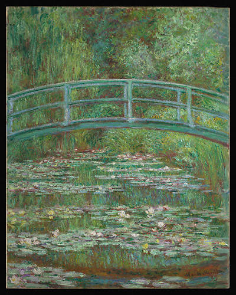

Hello, I’m
Michelle
Kim
Korea · Kuala Lumpur · Madison
01 / ABOUT ME
Curious about the stories that make people care.
I’m a student at the University of Wisconsin–Madison studying Consumer Behavior and Marketplace Studies, with a Certificate in Entrepreneurship.
I was born in Korea, grew up in Kuala Lumpur, and speak Korean and English. This past summer, I interned at a K-beauty marketing agency in Seoul, working on content strategy and creator recruitment.
I hope to build a career in fashion and beauty marketing and, one day, launch my own fashion brand.
02 / A FAVORITE PAINTING
A quiet moment in green.
Claude Monet’s The Japanese Footbridge is one of my favorite paintings—an immersive view of water, light, and nature.
